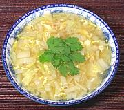

|
Cabbage Soup with PorkLaos | ||||
| Serves: Effort: Sched: DoAhead: |
4 soup ** 30 min Yes |
A light but tasty soup. How tasty depends on your stock. Pork stock is proper but chicken stock also works well. If making ahead, just bring to a boil so cabbage is still quite crisp, it'll finish when reheated. | |||
|
4 4 6 4 2 1 1/8 ---- |
c oz oz oz T t --- |
Stock (pork) Pork lean Napa Cabbage (1) Shallots Fish Sauce Egg Pepper, black -- Garnish Cilantro |
Prep
|